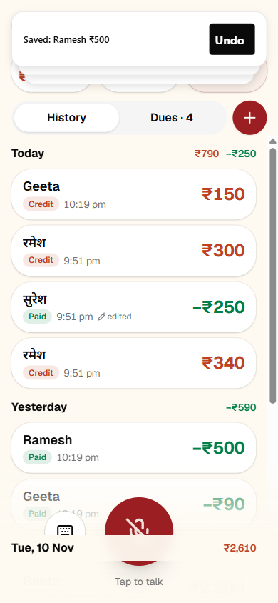
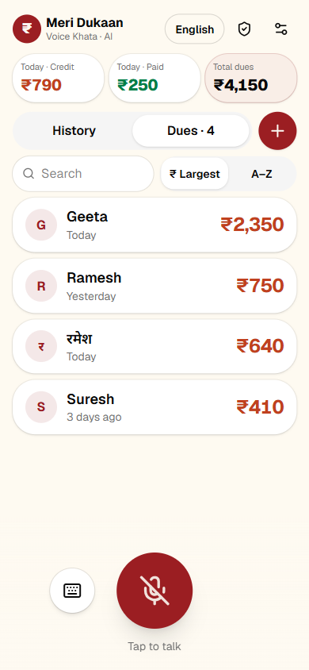
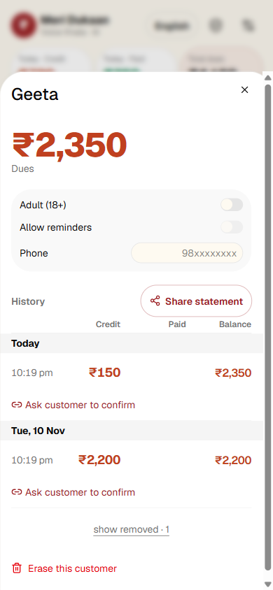

10 Indian languages plus English mixing. Full depth in Hindi, Kannada, Tamil and Telugu.
Asks only when unsure. Spoken fixes (“nahi, 430”), undo, a whole list in one breath with one confirm, and edits to older entries by voice.
Understands while you speak, replies in about 0.85 s, and you can interrupt it any time.
Ledger lives only on the phone, encrypted. Delete a customer for good. Tells you it is an AI. No voice cloning. Reminders are opt-in and polite.
Tamper-evident history with what was said for each entry. Customers can confirm an entry through a WhatsApp link. Manual edit as a backup.


